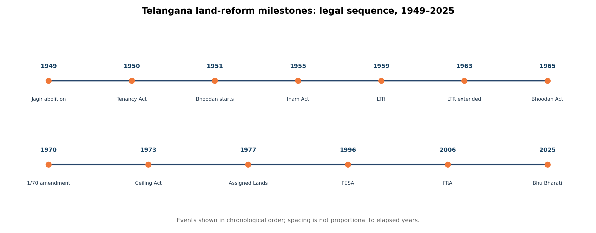
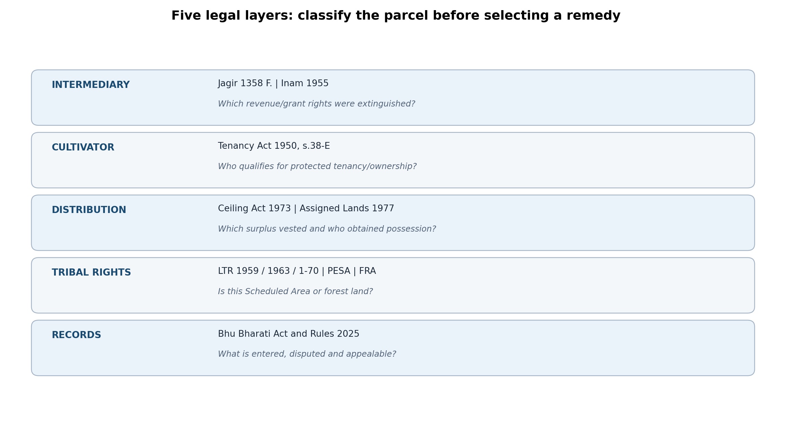
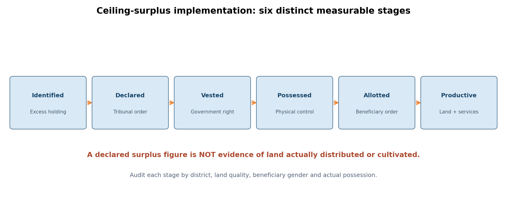

Paper IV — Economy and Development | Unit II — Telangana Economy | Topic 3
Land Reforms: First and Second Generations; Abolition of Intermediaries; Tenancy; Ceilings; Scheduled Area Land Alienation; Impact
Production status: Expanded original draft with full PDF, HTML and editable Markdown; NOT independently academically approved.
Syllabus authority: TGPSC Group I Notification 02/2024, Annexure-II. The commission-hosted original PDF was not directly authenticated during this run; wording below was checked against two reproductions of the notification and is marked for direct primary-source comparison.
Syllabus wording: “Land reforms: I generation (1947-1970) and II generation land reforms (1970 onwards)- Abolition of Intermediaries : Zamindari, Jagirdari and Inamdari -Tenancy Reforms : Land ceiling ; Land alienation in Scheduled areas ; Impact of land reforms.”
Syllabus-to-chapter map
| Official examinable component | Detailed sections | Core analytical distinction |
|---|---|---|
| Land reform concept and purpose | 1–3, 15–16 | Institutional abolition vs actual land distribution |
| First generation, 1947–1970 | 3–8 | Hyderabad legal sequence; national comparisons |
| Second generation, 1970 onward | 9–10, 13–16 | Ceiling, vesting, assignment and retention |
| Zamindari abolition | 3, 5 | National archetype vs Hyderabad's own tenure forms |
| Jagirdari abolition | 2, 4–5 | 1358 Fasli regulation, revenue vesting |
| Inamdari abolition | 2, 6 | 1955 Act and occupancy rights |
| Tenancy reforms | 7, 13, 16 | 1950 Act, protected tenants, Section 38-E |
| Land ceiling | 9, 15–16 | 1973 Act, standard holdings, tribunal and redistribution |
| Scheduled Area land alienation | 11–12, 16 | 1959/1963/1970 regulations, PESA, FRA distinctions |
| Impact of land reforms | 13–16 | Legal, social, economic and gender outcomes |
Topic summary
Land reforms changed agrarian relations by abolishing privileged revenue intermediaries, recognising cultivators' rights, limiting excessive holdings and protecting vulnerable groups from dispossession. Telangana's experience differs from a generic national zamindari narrative: the Hyderabad (Abolition of Jagirs) Regulation, 1358 Fasli, the Telangana Tenancy and Agricultural Lands Act, 1950, and the Telangana Abolition of Inams Act, 1955 addressed distinct historical tenures. The second generation introduced the Telangana Land Reforms (Ceiling on Agricultural Holdings) Act, 1973 and the Telangana Assigned Lands (Prohibition of Transfers) Act, 1977. Scheduled Area land protection developed through the 1959 Regulation, extension in 1963 and stronger 1970 amendment ('1/70'). The FRA, 2006 and PESA, 1996 serve related but separate tribal-rights purposes. The Telangana Bhu Bharati (Record of Rights in Land) Act, 2025 modernises land-record procedures; it does not replace all historical rights or itself redistribute land. Achievements include dismantling formal intermediary power and creating enforceable tenancy, ceiling and tribal-protection mechanisms. Limitations include litigation, informal tenancy, landlessness, women's exclusion, weak survey boundaries, and failure to convert paper allotments into productive possession. The most important examination method is to distinguish law enacted, right established, land vested, possession delivered and livelihood improved.
How to study
Read the following standalone quick revision first, then detailed sections 1–16, followed by the visual tables, 30 original MCQs and six original mains model answers. All PYQ provenance is explicitly unverified unless the original question paper and number are available.
Standalone Quick Revision — Land Reforms in Telangana
One-minute chronology
| Year / period | Law or development | Examination significance |
|---|---|---|
| 1947–1970 | First-generation reform | Intermediary abolition, tenant protection, early redistribution |
| 1358 Fasli (late 1940s) | Hyderabad (Abolition of Jagirs) Regulation | Ends jagir intermediary privileges; does not automatically allot all land |
| 1950 | Telangana Tenancy and Agricultural Lands Act | Protected tenants; Section 38-E ownership route for eligible cases |
| 1951 | Bhoodan begins at Pochampally | Vinoba Bhave; voluntary donation, not compulsory ceiling |
| 1955 | Telangana Abolition of Inams Act | Vesting of defined inams; eligible occupancy rights/ORCs |
| 1959 | Scheduled Areas Land Transfer Regulation I | Restrictions against alienation in Scheduled Areas |
| 1963 | Regulation II extends 1959 law to Telangana Scheduled Areas | Territorial extension matters |
| 1965 | Telangana Bhoodan and Gramdan Act | Institutional framework for donated land |
| 1970 | Regulation I ('1/70') | Tightens Scheduled Area non-tribal transfer restrictions |
| 1973 | Telangana Land Reforms (Ceiling on Agricultural Holdings) Act | Standard holding, declarations, tribunal, surplus, distribution |
| 1977 | Telangana Assigned Lands (Prohibition of Transfers) Act | Protects specified land assigned to landless poor |
| 1996 | PESA | Gram Sabha and local governance in Scheduled Areas |
| 2006 | Forest Rights Act | Individual and community forest rights; separate from 1/70 |
| 2025 | Bhu Bharati (Record of Rights in Land) Act | Modern land-record administration and remedies |
| 14 April 2025 | G.O.Ms.No.39 | Bhu Bharati Record of Rights Rules |
Five concepts that must not be confused
- Jagir vs inam vs deshmukh: Jagir is a revenue assignment; inam a grant or remission; deshmukh is a historically important office/status. They are not interchangeable legal categories.
- Abolition vs redistribution: Removing an intermediary changes revenue rights; it does not automatically give every agricultural labourer a patta.
- Protected tenant vs every lessee: Section 38-E applies to qualifying protected tenants under the statute and relevant proceedings, not to all oral renters.
- Ceiling surplus declared vs distributed: declaration, vesting, possession, allotment and productive use are separate stages.
- 1/70 vs PESA vs FRA: Scheduled Area land-transfer protection, local self-governance and forest-rights recognition are different regimes.
Essential legal and administrative facts
- Article 39(b)/(c): Directive Principles concerning resources and concentration; Article 31A: protection for specified agrarian reforms; Article 31B/Ninth Schedule: special constitutional protection subject to constitutional doctrine; Article 300A: property cannot be taken without authority of law.
- 1950 tenancy law: check protected-tenancy register, Section 38-E proceedings, possession, survey identity and succession; do not promise ownership without verification.
- 1955 inam law: check category of grant, vesting and any occupancy rights certificate; former inam land is not uniformly government-owned or privately owned without statutory inquiry.
- 1973 ceiling law: 'standard holding' varies by statutory land classification; family unit and transfers matter. The core stages are declaration → determination → surrender → vesting → possession → disposal.
- 1977 assigned-land law: covers defined assignments with non-alienation conditions; not all agricultural transfers.
- 1/70: ask whether the village is notified Scheduled Area and the date and character of the transfer. Ordinary registration cannot bypass the protective regulation.
- FRA: Gram Sabha starts forest-rights claims; community forest resource rights are not equivalent to private agricultural title.
- 2025 Bhu Bharati: official Act and G.O.Ms.No.39 dated 14 April 2025; record correction is not necessarily conclusive title adjudication.
Six frequent examiner traps
| Trap | Correct response |
|---|---|
| 'Every Telangana landlord was a zamindar.' | Hyderabad had jagir, inam, khalsa and other distinctive relations. |
| 'Ceiling is a fixed number of acres.' | It is computed through standard holdings and land categories. |
| 'A declaration proves redistribution.' | Check actual possession and beneficiary use. |
| 'A digital patta defeats tribal restrictions.' | Statutory restrictions continue to apply. |
| 'All tenants became owners in 1950.' | Protected status, statutory eligibility and orders are necessary. |
| 'Operational holdings measure ownership.' | Operational and ownership holdings are different statistical concepts. |
Mains answer formula
Define the reform; locate its generation and relevant law; explain the mechanism; compare intended with actual beneficiaries; evaluate gender, tribal and productivity effects; conclude with survey, possession, appeals, legal aid, water, credit and transparent records. Always include a Telangana-specific example. Never invent acres, percentages or official PYQ years.
Rapid self-test
- Which Act governs ceiling computation? 1973 Telangana Land Reforms Act.
- What is Section 38-E known for? Ownership route for eligible protected tenants.
- What happened in 1963? Extension of 1959 Scheduled Area land-transfer regulation to Telangana Scheduled Areas.
- What is '1/70'? The 1970 strengthening of Scheduled Area transfer protection.
- What started at Pochampally in 1951? Bhoodan movement.
- What changed in April 2025? Bhu Bharati record-of-rights framework and rules.
Detailed Notes — Land Reforms and Agrarian Relations in Telangana
1. Land reform as a transformation of power, not merely acreage
Land reform means deliberate changes in the ownership, possession, tenancy, management and recording of land to correct unequal agrarian relations. The most visible measure is redistribution from large holders to the landless, but a complete reform programme also protects cultivators from arbitrary eviction, changes who receives rent, restricts speculative transfers, secures common resources and establishes credible records. The fundamental distinction is between land as property, land as a productive input, land as social power, and land as a basis for cultural identity. In a dryland village in Mahabubnagar, a legally owned two-acre holding without irrigation or institutional credit may confer much less economic security than the same acreage near a canal. In an Adivasi hamlet of Adilabad, a community's relationship with forest and grazing resources cannot be reduced to an individual patta.
Why agrarian relations mattered: Before reform, cultivators could face overlapping claims by the state, jagirdars, deshmukhs, inamdars, moneylenders and village officials. A person who ploughed a field might not be the person recognised as its owner, the person receiving the produce surplus, or the person authorised to transfer it. Such separation reduced incentives to invest, exposed tenants to eviction and allowed local elites to convert control of land into control of labour, credit and political participation. Forced labour (vetti), extra-legal cesses and debt dependence reinforced these asymmetries in parts of Telangana. Land reform therefore belongs simultaneously to economic development, social justice and democratic state-building.
Five reform questions should guide any evaluation. First, did the reform remove an intermediary's right to extract rent? Second, did it make the actual cultivator secure against eviction? Third, did it transfer usable land to the landless rather than merely produce a ceiling declaration? Fourth, did it protect vulnerable communities against subsequent dispossession? Fifth, did it give beneficiaries reliable access to water, markets, credit, survey boundaries and remedies? An affirmative answer to only the first question is a partial institutional reform, not a completed redistribution revolution.
The constitutional foundation is distinctive. Article 39(b) directs policy towards distribution of material resources to serve the common good, and Article 39(c) discourages concentration of wealth; these are Directive Principles, not self-executing individual claims. Article 31A protects specified agrarian-reform laws from certain fundamental-right challenges; Article 31B and the Ninth Schedule protect listed enactments, subject to the constitutional basic-structure doctrine for post-24 April 1973 insertions. The original fundamental right to property was removed by the Forty-Fourth Amendment; Article 300A now requires authority of law for deprivation of property. None of these provisions eliminates procedural fairness or the need to identify the correct law governing a parcel.
Two competing interpretations: A redistributive view treats land inequality as a structural barrier to freedom, bargaining power and dignity; secure smallholders may invest and send children to school. An efficiency-centred view cautions that fragmentation, insecure lease markets and poor complementary infrastructure can limit productivity even after redistribution. The sensible examination conclusion is conditional: equitable tenure and productive support are complements, not substitutes. In Telangana, the result depends on local history, rainfall, tribal protection, women's names on records and implementation capacity rather than on one statewide average. [S01] [S02]
2. Agrarian hierarchy in the Hyderabad State: jagir, khalsa, inam and deshmukh
The Hyderabad State inherited layered systems of revenue assignment and local authority. Khalsa or diwani land was administered more directly through the state revenue machinery; jagir areas involved assignment of revenue or jurisdiction to privileged grantees; inam denoted grants or revenue concessions, often connected to service, religion or institutions. Paigah estates and other named tenure forms added complexity. Deshmukh and deshpande described influential revenue or hereditary offices, but a deshmukh was not automatically the legal equivalent of every jagirdar or zamindar. The familiar word zamindari is an all-India comparative category; Telangana answers should explain Hyderabad's specific jagir and inam structures rather than mechanically transplant Bengal's Permanent Settlement.
A typical cultivator's burden might include an official assessment, an intermediary's share, unofficial exactions, labour obligations and dependence on a lender for seeds. The arrangement was not uniform across districts, crops or generations. Some tenants held longstanding occupancy or customary claims; others were sharecroppers with weak written evidence. Landlords could use village offices and private coercion to enforce claims. The Telangana peasant struggle of the 1940s was rooted partly in this combination of rent extraction, vetti, eviction and unequal political authority. It would be historically inaccurate, however, to attribute every local grievance to one tenure category or to assume that every landholder was a jagirdar.
Mechanism of inequality: A cultivator who cannot credibly retain the harvest from an investment may avoid building a bund or planting a long-duration crop. An intermediary with collection powers can appropriate part of the gain; a creditor may demand repayment at harvest; a labourer without land has little bargaining power during a drought. Social stratification reinforced economic stratification: caste, tribe, gender and access to the revenue office shaped whose claims were written down. Women performed agricultural labour but were frequently absent from formal ownership records. Scheduled Area tribal households faced an additional risk when outsiders obtained land through debt, fraudulent documents or ostensibly voluntary sales.
The historical period must be divided carefully. Hyderabad's integration into the Indian Union in 1948, abolition of jagirs around 1949, tenancy legislation in 1950, inam legislation in 1955, and later ceiling law in 1973 were distinct steps with different legal effects. A 1949 jagir vesting order could end an intermediary's revenue entitlement while leaving questions about the cultivator's ownership to later proceedings. A protected tenancy entry could establish a strong statutory claim without being identical to a completed title certificate. A ceiling-surplus parcel might vest in the state yet remain in litigation or occupation for years.
Telangana case method: When a farmer says an ancestor cultivated an old jagir field, ask for the former tenure category, vesting and settlement history, tenancy records, occupancy-rights certificates, survey number, subsequent assignments and any litigation. The correct remedy depends on this chain; a current digital entry alone cannot answer a century of title history. This is why agrarian history remains operationally relevant to today's revenue administration. [S03] [S04] [S05]
3. First-generation land reforms, 1947–1970: national agenda and regional sequencing
India's first generation concentrated on abolition of intermediaries, tenancy regulation, initial ceilings, consolidation of holdings and cooperative development. The premise was that independence would be incomplete if the peasant remained subordinate to a rent-receiving layer. Provincial legislation dismantled zamindari and similar estates; the Constitution's First Amendment of 1951 and later changes helped protect agrarian legislation from property-right litigation. This was not a single national Land Reforms Act: agriculture and land fall primarily within the states' legislative sphere, so definitions, dates, exceptions and enforcement differed considerably.
The standard policy sequence was: identify an estate or intermediary right; enact vesting in government; determine compensation or commutation where prescribed; survey cultivators and existing rights; regulate rents and eviction; confer ownership or occupancy rights in eligible cases; and record the resulting interests. Each step had a different claimant and evidence requirement. Vesting could be legally clear while physical possession and subsequent mutation were contested. Revenue officers were asked to implement reform in villages where the former local elite often possessed the best documents and political connections.
In Telangana's Hyderabad area, the first generation began under unusual conditions of princely-state integration and peasant mobilisation. The Hyderabad (Abolition of Jagirs) Regulation, 1358 Fasli, attacked jagir tenure; the Hyderabad Tenancy and Agricultural Lands Act, 1950, created protected-tenancy institutions; the Telangana Abolition of Inams Act, 1955, addressed another category of grants. These laws cannot be collapsed into one generic 'zamindari abolition'. Following formation of Andhra Pradesh in 1956, regional legal legacies continued: the Telangana area and Andhra area did not have identical historical tenure systems. A mains answer should specify which region and law it discusses.
Achievements: The legal standing of revenue-collecting intermediaries was curtailed; state-cultivator relations became more direct; protected tenants gained statutory routes to security and, in qualifying circumstances, ownership; some land entered redistribution channels. These changes undermined hereditary political power and opened space for electoral and cooperative institutions. Yet abolishing an intermediary did not automatically distribute land to every landless labourer. Large owners could retain private lands, obtain exemptions, or exploit procedural delays. Poor tenants frequently lacked proof of continuous cultivation; women and seasonal workers were especially invisible.
Implementation problems: State governments needed accurate village maps, a fair grievance forum, staff insulated from pressure and a mechanism to distinguish genuine tenants from fabricated claims. Weak records and elite influence created room for benami holdings, anticipatory transfers and eviction before statutory cut-off dates. Tenancy laws could also induce landlords to shift to informal or oral leasing to avoid recorded obligations. Economists therefore debate whether stringent protections without reliable recognition can inadvertently drive tenancies underground. This does not refute the need for protection; it shows why implementation design matters.
The first-generation period is best understood as the transition from status-based claims to statute-defined rights. Its incompleteness motivated the more systematic ceilings and redistribution drive from the 1970s. The key examination distinction is that early reform primarily restructured authority and tenancy, whereas later reform more explicitly sought to identify surplus land and allocate it to the landless. [S02] [S03] [S06]
4. Abolition of jagirs: the Hyderabad (Abolition of Jagirs) Regulation, 1358 Fasli
A jagir was not simply a large farm: it involved a legally recognised grant or assignment of revenue and sometimes administrative privileges over a territory. The Hyderabad (Abolition of Jagirs) Regulation, 1358 Fasli (Regulation LXIX), enacted in the late 1940s, provided for abolition and state takeover of jagir administration. Its inclusion in the Constitution's Ninth Schedule demonstrates the reform's early constitutional significance. The associated Hyderabad Jagirs (Commutation) Regulation, 1359 Fasli, addressed commutation arrangements. Students should retain the Fasli citation because substituting an unverified Gregorian act number is a common error.
How abolition operated: The state displaced the jagirdar as revenue intermediary, assumed administration and dealt with the statutory consequences of vesting and compensation. The government needed to distinguish jagir property, private property, tenants' claims, village commons and land that legally vested in the state. The end of a jagirdar's revenue entitlement did not automatically extinguish every lawful tenancy, nor did it make every former jagir field the private property of whoever happened to possess it. Later record-of-rights laws expressly preserve the status of jagir lands that vested in the government, subject to legally valid settlement or allotment.
The economic effect was the removal of an institutional wedge between the state and agricultural producers. Instead of rents and cesses flowing through a privileged grantee, public administration could assess land revenue directly and apply uniform procedures. Politically, abolition curtailed hereditary local authority. Socially, it opened the possibility of recognising cultivators, though the beneficiaries depended on separate tenancy, settlement and assignment rules. In areas with entrenched deshmukh influence, coercive practices did not vanish merely because the formal revenue category changed.
Contrasting views: A celebratory account describes abolition as the decisive destruction of feudal tenure. A critical account notes that the state often inherited records produced under the old order and that large landholders could remain powerful as private owners, creditors or political brokers. Both can be true: legal abolition of a jagir was transformative, but social relations and land distribution changed more slowly. Courts and revenue tribunals later faced disputes about whether a parcel was government jagir land, a valid private holding or subject to an occupancy grant.
Practical example: A family claims a field because it appears in an ancestor's private account of a Paigah estate. Another person has cultivated it for decades and holds a later patta. The authority must examine the original tenure, vesting regulation, settlement, assignment and chain of lawful transfers. It should not presume either that all Paigah land remained privately alienable or that any cultivator acquired ownership merely by possession. The Bhu Bharati Act, 2025 also contains provisions concerning the recording of former jagir lands, making this a current administrative problem rather than an obsolete historical footnote. [S03] [S04] [S07]
5. Zamindari, deshmukhs and the danger of false equivalence
Zamindari abolition was a central first-generation reform across India, but the term must be used with geographic precision. Under Bengal's Permanent Settlement, zamindars became recognised revenue-paying proprietors who extracted rents from cultivators. In other regions, zamindari and estate systems took different legal forms. Telangana's Hyderabad area featured jagir, inam and direct state-revenue lands, along with influential deshmukhs and other local magnates. A Telangana answer may compare these institutions, but should not assert that the Hyderabad area was governed throughout by Bengal's Permanent Settlement.
The deshmukh historically functioned as a hereditary local revenue intermediary or influential landholding figure in parts of the Deccan. Over time, some acquired extensive control over village lands and tenants. The social meaning of the title varied. The distinction between a title, an office, a revenue assignment and a private proprietary claim matters because abolition laws attached consequences to legally defined interests, not to colloquial labels alone. In the Telangana peasant struggle, resistance to deshmukh domination frequently involved eviction, high exactions, forced labour and restrictions on peasants' autonomy.
Three pathways of reform operated in parallel. First, estate or jagir abolition removed legally privileged revenue collection. Second, tenancy laws regulated landlord-cultivator relations even on privately held lands. Third, ceilings later limited the concentration of agricultural holdings. A deshmukh who lost an intermediary privilege might still own land below a statutory ceiling; a protected tenant might acquire ownership through a tenancy provision even when the landlord was not a jagirdar. The analytical mistake is to assume that any one statute did all three jobs.
Why this matters for social justice: When tenants obtained rights, they gained a stronger bargaining position, potentially reducing the need for patronage and debt. Yet the persistence of landlessness meant that Dalit agricultural labourers and many women did not benefit directly from ownership reforms. The poor might be hired by a new class of owner-cultivators without receiving land. Redistribution therefore has to be evaluated against both former intermediary power and the distribution of land among labouring households.
Examination comparison: Write that zamindari abolition was the national archetype of intermediary removal; jagir abolition was a distinctive Hyderabad legal measure; inam abolition dealt with granted lands and occupancy claims; and deshmukh describes a historically important power relation rather than one uniform statutory tenure. Use a four-column comparison of origin, right exercised, reform law and remaining dispute. This precision earns more than a generic statement that all landlords were abolished after independence. [S03] [S04] [S05]
6. Inamdari abolition and occupancy rights
An inam was a grant, remission or assignment of land revenue or land-related benefit, sometimes made for religious, charitable, administrative or personal service. The Hyderabad/Telangana legal landscape included service inams and grants with differing conditions. The Telangana Abolition of Inams Act, 1955 (Act VIII of 1955) provided for abolition and vesting of defined inams and for recognition of eligible occupancy rights. The statute is distinct from the Hyderabad Abolition of Inams and Cash Grants Act, 1954 found in other territorial compilations; students should check the jurisdiction and short title of any source rather than combine them.
The central administrative question was who qualified as occupant. An inamdar, permanent tenant, protected tenant or other cultivator could have different rights depending on the category of land and the statutory conditions. An occupancy rights certificate (ORC) could evidence a right conferred through the prescribed process. Its existence and validity must be checked against the original order, survey number, extent, claimant's eligibility and any appeal. An inam's vesting in government was not necessarily the final word on every cultivator's entitlement, because the Act created routes to occupancy in specified cases.
The reform attempted to convert a web of conditional grants into administratively intelligible holdings. This could improve credit access and reduce dependence on the former grant holder. But disputes arose where temples, institutions, service-holders and cultivators asserted overlapping rights. Village maps were sometimes incomplete, and later sale deeds might trace back to contested ORCs. A certificate wrongly issued for land reserved to a public institution or contrary to a statutory bar cannot be cured by a clean-looking online entry.
Example: An agricultural worker's family claims to have cultivated a former service inam for several decades. The revenue officer must not simply ask whether the family is now in possession. The relevant inquiry concerns the grant category, vesting date, nature and continuity of tenancy, occupancy eligibility, original ORC proceedings and lawful subsequent transactions. Conversely, a descendant of the inamdar cannot assume that the former grant survived unchanged after statutory abolition.
Evaluation: Inam abolition was important because it addressed a form of agrarian privilege that ordinary 'zamindari' narratives often overlook. It also reveals the difference between vesting, recognition, registration and possession. The first changes the legal status of the grant; the second identifies a qualifying person; the third documents a transaction or right; the fourth concerns physical control. Effective reform must align all four. The 2025 Bhu Bharati framework recognises that inam lands and valid occupancy-rights certificates require careful differentiated treatment in records. [S05] [S07]
7. Tenancy reforms and the Telangana Tenancy and Agricultural Lands Act, 1950
A tenant cultivates land held from another person under a lease, share arrangement or other recognised tenancy relationship. Tenancy reform traditionally pursues three objectives: reasonable rent, security against arbitrary eviction, and eventual ownership for eligible cultivators. Telangana's key historical statute is the Telangana Tenancy and Agricultural Lands Act, 1950 (Act XXI of 1950), derived from the Hyderabad law. It sets out categories and procedures for tenants and protected tenants; the well-known Section 38-E provides a statutory route by which ownership of specified lands can vest in eligible protected tenants under the Act's conditions and official process. The exact legal outcome is case-specific, not automatic for every person who claims to have cultivated land.
Protected tenancy was intended to stabilise the cultivator's relationship with land. Without protection, a landlord could evict a tenant just before improvements began to yield returns, or threaten eviction to extract higher rent. With enforceable protection, the tenant may have stronger incentives to conserve soil, invest in irrigation and educate children. A valid protected tenancy entry can also change bargaining power during sale or succession. However, recorded status, eligible extent, subsequent orders and statutory exceptions must be established before treating the tenant as an owner.
Three stages should be separated: (1) identification of a tenant in records or adjudication; (2) security of possession and rent terms; (3) vesting or transfer of ownership where the statute permits. A protected tenant may have a substantial right even before a final ownership certificate; a casual lessee does not become a protected tenant simply by working the land. Section 38-E proceedings and certificates deserve specific attention in Telangana land-dispute case studies. Students should avoid saying 'all tenants became owners in 1950'.
Limits and unintended responses: Some landlords evicted tenants in anticipation of reform or avoided written leases; others used family labour or informal sharecropping. Migrant workers, women tenants and Dalit labourers could remain unrecorded. A law that offers security only to persons named in old registers can preserve the claims of an earlier generation while leaving today's tenant cultivators without formal recognition. Tenant protections also interact with credit: a bank may demand a title document even when the cultivator bears the crop risk.
Policy debate: Strict protection can curb exploitation, but poorly designed restrictions may discourage transparent leasing and limit access for land-poor cultivators. Formal leasing frameworks can improve efficiency if they preserve owners' title and tenants' access to crop insurance, institutional loans and dispute resolution. Telangana's historical protected-tenancy regime should not be confused with a modern annual crop-cultivator certificate or a simple registered lease. In an answer, evaluate both security and the possibility of hidden tenancy, rather than portraying either complete prohibition or unrestricted contracts as universally optimal. [S06] [S08]
8. Voluntary redistribution: Bhoodan, Gramdan and cooperative possibilities
Bhoodan was a voluntary land-gift movement associated with Acharya Vinoba Bhave, beginning in 1951 at Pochampally in the Telangana region. Its moral claim was that landowners should voluntarily share land with the landless, avoiding the violence and litigation sometimes associated with compulsory redistribution. Gramdan extended the idea towards collective village-level donation or reorganisation of land rights. The Telangana Bhoodan and Gramdan Act, 1965 (Act 13 of 1965) provided an institutional framework for donated land, a Bhoodan Yagna Board and disposal for eligible purposes. This legal history is important because Bhoodan was not merely a symbolic appeal without subsequent legislation.
Mechanism: A donor declares or transfers land for the programme; the authority examines the donor's title, encumbrances and suitability; the land must be vested or otherwise lawfully accepted under applicable rules; beneficiaries should be selected fairly; and possession and revenue records should be updated. If the donation covers a rocky, disputed or inaccessible parcel, the nominal acreage may have little livelihood value. Similarly, a promise of land is not the same as a completed registered and enforceable allotment. Bhoodan statistics therefore require separate categories for land pledged, legally accepted, available for distribution and actually possessed by beneficiaries.
The movement connected agrarian justice with Gandhian ideas of trusteeship and social reconciliation. It could mobilise communities that distrusted coercive state action and encouraged a public ethic of sharing. Yet reliance on voluntarism meant that the quantity and quality of donations depended on donors. Some gifts were encumbered or marginal lands; implementation required state verification and could reproduce local power inequalities. Bhoodan is thus best analysed as a complementary social movement, not as a substitute for tenancy enforcement or statutory ceilings.
Cooperative and collective possibilities: Small farms face disadvantages in purchasing inputs, using machinery, storage and marketing. Cooperatives, farmer producer organisations and shared services can reduce these disadvantages without necessarily transferring individual ownership to a collective. Gramdan, however, had more ambitious collective-rights aspirations than a modern marketing FPO. A comparison should distinguish land-title collectivisation from cooperative purchase or sale of outputs. Telangana's rainfed and fragmented farms illustrate why institutional cooperation may matter even when land redistribution succeeds.
Mains evaluation: The most defensible judgement is that Bhoodan widened the ethical vocabulary of reform and supplied some land, but its practical achievements were uneven and should not be inferred from headline donation pledges. It illustrates a general lesson: land reform needs moral legitimacy, enforceable law, accurate cadastral records and complementary production services. [S09] [S10]
9. Second-generation reform after 1970: the ceiling strategy
The second generation sought more systematic ceilings and redistribution, building on the recognition that intermediary abolition had not substantially equalised ownership. The Telangana Land Reforms (Ceiling on Agricultural Holdings) Act, 1973 (Act 1 of 1973) is the principal statutory anchor. Its provisions include calculation of a ceiling area, declarations of holdings, tribunals, surrender and vesting of surplus land, and disposal of vested land. The legal phrase standard holding is crucial: ceiling acreage varies with land class, irrigation and productivity; it is not one universal number of acres applicable to every Telangana holding.
How a ceiling works: The law first defines the unit of assessment (individual or family unit), classifies land and computes holdings across locations, then compares the total with the permitted ceiling. Declarations and inquiries identify any excess; orders specify surrender; the government takes lawful possession; and surplus land becomes available for allocation according to law. Section 4 deals with ceiling area, Section 5 with standard holdings and computation, Sections 8–11 with declarations, determination, surrender and vesting, and Section 14 with disposal of vested land. A 'declared surplus' entry is not proof that a poor family received cultivable land.
Why family definitions matter: If the ceiling applies to a family unit, the treatment of spouses, minor children and adult sons can alter the calculation. Transfers made to evade the ceiling may be scrutinised under statutory provisions. But courts must still decide genuine ownership, inheritance and transaction validity; not every partition is fraudulent. Exemptions and differing classifications may be necessary for some institutions or special land uses, yet excessive exemptions undermine redistribution. Land quality is as important as size: a hectare of irrigated land and a hectare of dry scrubland are not equivalent production assets.
Distribution challenges: Surplus land may be under litigation, occupied by former holders, inaccessible, fragmented or lacking water. Beneficiaries may receive paper pattas but not physical possession; the state may fail to survey boundaries or provide credit. Redistribution may improve dignity and reduce dependence on wage labour, but a household with a tiny unirrigated plot still needs employment, markets and social protection. A ceiling reform's outcomes should therefore be measured through (a) holdings identified, (b) surplus declared, (c) land vested, (d) land taken into possession, (e) land actually distributed, and (f) beneficiaries retaining productive use.
Debate: Redistribution advocates emphasise the democratic and anti-poverty value of ownership. Critics warn of fragmentation, litigation and disincentives to investment. Both views overlook that many ceiling programmes were limited more by implementation than by an unavoidable economic trade-off. In Telangana, the sensible policy package is legally secure distribution plus irrigation, soil conservation, institutional credit, market access and women's ownership rights. [S11] [S12]
10. Assigned lands, transfers and post-distribution protection
Once government or ceiling-surplus land is assigned to a landless household, the reform problem changes from acquisition to retention. Poor allottees may sell or mortgage under distress, sometimes to the same local elites whose power redistribution sought to reduce. Telangana's Assigned Lands (Prohibition of Transfers) Act, 1977 (Act 9 of 1977) restricts transfer of defined assigned lands and provides consequences for prohibited transactions. Its statutory definition includes certain lands assigned to the landless poor with non-alienation conditions and lands allotted under ceiling laws. The Act is not a blanket prohibition on every sale of agricultural land in Telangana.
Policy rationale: The government gives land for livelihood security, not to create a short-lived windfall that a moneylender can capture. A prohibition can prevent forced or fraudulent sales and keep a public asset within its intended beneficiary group. Revenue authorities and registering officers must examine assignment conditions and prohibited-property records. However, blanket restrictions may also limit a beneficiary's ability to use the asset as collateral or respond to migration, illness or changing livelihood opportunities. The law contains specific definitions, procedures and exceptions that must be read before giving case-specific advice.
Administrative chain: A proper assignment requires an eligibility order, identified parcel, physical demarcation, possession, record mutation and delivery of usable documents. A later purchaser should check the original assignment register, land classification, survey and subdivision, prohibition entries and any authorised resumption or re-assignment. An online patta or an old sale deed alone does not guarantee transferability. Conversely, authorities must not label private patta land as assigned without a lawful basis and an opportunity for correction.
Example: A Dalit household receives two acres under a land distribution scheme. Years later, it executes an unregistered agreement with a lender. The legal question is not merely whether consideration was paid: it is whether the land is legally assigned with a non-alienation condition, whether the proposed transfer falls within the statutory prohibition and what remedy is available to the original beneficiary. A policy evaluation should additionally ask whether drought, lack of irrigation or medical debt drove the transaction.
Gender dimension: Assignment to the male household head may exclude women's bargaining power and make them vulnerable after widowhood, divorce or desertion. Joint or individual pattas in women's names, transparent succession and accessible legal aid can improve durable control. But naming a woman in a register without secure possession or social support is insufficient. The reform's success is measured by the ability to use and retain land, not just the count of allotment orders. [S13]
11. Scheduled Area land alienation: the 1959 Regulation and 1970 amendment
Land alienation means loss or transfer of land from its holder, often through sale, mortgage, debt, coercion, fraud or administrative manipulation. In Scheduled Areas, land is tied to Adivasi livelihoods, cultural continuity and community autonomy. Ordinary contract freedom may be inadequate because buyers, creditors and tribal sellers often have radically unequal information and bargaining power. The Andhra Pradesh Scheduled Areas Land Transfer Regulation, 1959 (Regulation I of 1959), extended to Telangana Scheduled Areas by Regulation II of 1963, and strengthened by Regulation I of 1970, is commonly called the 1/70 Regulation.
The core legal protection is a stringent restriction on transfer of immovable property in Scheduled Areas in favour of non-tribals, subject to the law's precise provisions. The 1970 amendment significantly tightened the regime: a non-tribal cannot simply buy Scheduled Area land from another non-tribal and thereby bypass tribal protection. Transfer disputes may be investigated by the competent Agency authorities; unlawful transfers can be declared invalid and restoration ordered. A person asserting a lawful exception or earlier title must prove it through the prescribed legal process. It is wrong to say that the 1959 law prohibited every possible transfer everywhere in Telangana; it applies to notified Scheduled Areas and has a specific amendment history.
Why the rule is unusually strict: A tribal cultivator might sign a debt document that is later treated as a sale; an outsider may hold possession while the tribal family lacks legal assistance; informal occupation may be regularised in the wrong name. A standard market rule focused on formal consent would ignore these asymmetries. The regulation therefore uses protective presumptions and public enforcement rather than relying only on private litigation. This has generated judicial disputes about proof of title, date of transaction, possession and the status of land originally held by non-tribals.
Telangana relevance: Scheduled Area issues arise in parts of Adilabad, Bhadradri Kothagudem, Mulugu and other notified tribal belts; district boundaries alone are not enough to establish Scheduled Area status. For any case, confirm the village notification and survey parcel. Mining, reservoirs, roads and plantation expansion can create displacement even without a conventional registered sale. Tribal land protection must therefore be considered alongside forest rights, environmental law, rehabilitation and local self-governance.
Balanced appraisal: Restrictions help prevent permanent dispossession and protect community survival. Critics point to delays, disputed historical transfers and barriers to formal credit or investment. These problems call for transparent verification, prompt restoration and accessible finance—not casual relaxation that would defeat the protective purpose. An answer should explain the legal chronology 1959 → extension in 1963 → strengthening in 1970 and then assess enforcement. [S14] [S15]
12. Tribal land, forest rights and PESA: related but different legal regimes
Three legal frameworks frequently appear together but answer different questions. The Scheduled Areas Land Transfer Regulation restricts specified transfers of immovable property in notified Scheduled Areas. The Panchayats (Extension to Scheduled Areas) Act, 1996 (PESA) strengthens local self-governance and Gram Sabha roles in Scheduled Areas, subject to state implementation. The Scheduled Tribes and Other Traditional Forest Dwellers (Recognition of Forest Rights) Act, 2006 (FRA) recognises eligible individual and community rights in forest land and forest resources. Neither a Gram Sabha resolution under PESA nor an FRA claim automatically proves title to every privately held agricultural parcel.
FRA architecture: Rights may include individual cultivation and habitation, community access to grazing and water bodies, rights over minor forest produce, and community forest resource management. The Gram Sabha initiates and verifies claims through the statutory process; sub-divisional and district-level committees have roles in scrutiny and final decisions. Claimants must meet the Act's eligibility and evidentiary standards, which differ between Scheduled Tribes and other traditional forest dwellers. Community forest resource rights are not the same as a private individual patta, and the forest department's administrative records are not the only possible evidence.
PESA's contribution: Tribal self-government requires more than protecting isolated transactions. Gram Sabha consultation and control over local resources, planning and customary practices can reduce decisions imposed without community consent. Implementation depends on state laws and rules, the powers actually devolved, and whether meetings are inclusive of women and marginal hamlets. The Gram Sabha must be distinguished from the Gram Panchayat executive; a decision by a small group of officials cannot automatically substitute for a properly constituted community process.
Example: A tribal village seeks recognition of traditional grazing and forest produce rights while an outside company proposes a road or extraction project. A land-transfer inquiry may concern whether a private parcel was illegally alienated; an FRA proceeding may concern community forest rights; PESA may govern consultation and village institutions; acquisition and environmental law may add separate requirements. Combining all claims into one undifferentiated 'tribal land case' leads to procedural errors.
Competing perspectives: Conservation officials worry about ecological degradation and overlapping administrative authority; tribal-rights advocates stress that historical exclusion and insecure tenure can themselves undermine conservation. FRA's design explicitly links recognition of rights with duties to protect biodiversity and forest resources. The appropriate policy question is how to make community stewardship and ecological outcomes mutually reinforcing. For mains answers, use a legal comparison table showing territory, rights, decision-making institution and remedy under each framework. [S16] [S17]
13. Implementation: records, survey, litigation and administrative capacity
A land-reform law changes incentives only when the state can identify the parcel, establish rights, resolve disputes and enforce its orders. Telangana's cadastral history includes survey numbers, pahani or adangal cultivation records, record-of-rights entries, pattadar passbooks, tenancy registers, ORCs, assignment registers and prohibitory-property lists. These documents serve different purposes. A cultivation entry may indicate who farmed a plot in a season, while a title-related entry records a claimed legal interest; a registered sale deed is evidence of a transaction but cannot transfer better title than the seller possessed. Digitalisation improves access but does not turn a disputed entry into a judicial decree.
Common failure points: First, old boundaries do not align with modern survey subdivisions. Second, succession and oral family partitions are not recorded. Third, beneficiaries receive pattas but not possession. Fourth, litigation delays vesting or restoration. Fifth, officials lack capacity to distinguish jagir, inam, tenancy, assigned, forest and private patta categories. Sixth, poor claimants face travel, fees, language and legal representation barriers. Seventh, mutation may be treated as ownership determination even though revenue entries are generally not conclusive adjudications of civil title.
A defensible administrative workflow starts with classification: Is the parcel in a notified Scheduled Area? Is it forest land? Is it assigned, ceiling-surplus, former jagir, former inam, protected-tenancy land or ordinary private patta? Next verify primary records and the legal chain, identify interested parties, issue notice, inspect boundaries, conduct a reasoned hearing, decide under the correct statute, provide appeal or revision, and then update the digital record. Public access to reasons and time limits is essential. A state portal should make errors easier to challenge, not merely easier to reproduce at scale.
Measurement of implementation: The most informative dashboard would track applications received, legally eligible, decided, appealed, restored or distributed, actually possessed, and productive after two seasons. Separate data by Scheduled Tribe, Scheduled Caste, women, district and land quality. Counting issued pattas alone can inflate success; counting only litigation ignores informal dispossession. Independent social audits, legal aid, GPS-supported boundary verification and Gram Sabha scrutiny can expose discrepancies, but must respect privacy and the special protections for tribal land.
Political economy: Officials may face pressure from influential landholders, developers and intermediaries. Conversely, automatic suspicion of every transaction can harm legitimate smallholders. The solution is not indiscriminate discretion but clear statutes, searchable orders, appeal rights, conflict-of-interest controls and robust field verification. Land administration is thus a test of the rule of law as much as a technical records project. [S06] [S11] [S18]
14. Bhu Bharati Act, 2025 and the unfinished reform agenda
The Telangana Bhu Bharati (Record of Rights in Land) Act, 2025 (Telangana Act 1 of 2025) and G.O.Ms.No.39 dated 14 April 2025 introduced a revised legal and procedural framework for land records, mutation, corrections, appeals and digital services. The official Revenue Department document repository lists the Act, G.O.Ms.No.36 and G.O.Ms.No.39, all of which should be consulted for the current process. This reform concerns record administration; it must not be mistaken for a new general redistribution statute or a repeal of every earlier tenancy, ceiling or tribal-protection law.
Why records reform matters: If an eligible owner or protected tenant cannot correct an erroneous entry, they may be unable to obtain a loan, insure crops, register a lawful transaction or resist encroachment. A transparent correction and appeal process can lower the transaction costs of asserting rights. The 2025 rules address preparation and maintenance of records, mutation for sale, gift, succession and other events, certified copies, village accounts, appeals and related administration. The Chief Commissioner of Land Administration is a central institution in this system.
Important legal nuance: The 2025 Act contains provisions on government and former jagir lands and on inam lands, including treatment of valid occupancy-rights certificates. An entry in a digital portal is not a licence to sell protected tribal or assigned land. Nor should the presence of an old inam description automatically defeat a valid statutory ORC. Every claim still requires classification under the governing law. A sound answer should distinguish modernisation of records from adjudication of ownership and from redistribution.
Dated update: The state issued the Bhu Bharati Rules through G.O.Ms.No.39 on 14 April 2025. The official Bhu Bharati portal's document page continues to host the Act and rules; these are primary documents. News reports in 2026 described phased pilots, map-linked registration and efforts to process old informal transactions, but the student should not treat announced targets as verified statewide results. Where the precise scope or operational date of a module matters, check the current gazette, notification and portal rather than relying on an announcement.
Critical appraisal: Technology can reduce information asymmetry and petty discretion, but digitising flawed data can amplify exclusion. Aadhaar or mobile-phone dependencies may disadvantage older farmers; automated prohibitory lists may block lawful transactions; poor connectivity may burden remote tribal communities. Successful reform needs field survey, multilingual service, offline help, reasoned orders and legal aid. The modern agenda is therefore secure tenure + accountable records + accessible remedies + productive support, not merely a faster website. [S07] [S18] [S19]
15. Assessing the impact: achievements, limits and distributional evidence
A fair impact assessment separates legal achievement from distributional and livelihood outcomes. Abolition of jagirs and inams removed recognised intermediary privileges and changed the state's relationship with cultivators. Tenancy protections offered enforceable claims to some actual cultivators. Ceiling legislation identified surplus holdings and established redistribution mechanisms. Assigned-land restrictions and Scheduled Area transfer controls attempted to preserve the gains of vulnerable households. These are important institutional achievements even where poverty and landlessness persisted.
Yet the distribution of benefits was unequal. Recorded protected tenants were better placed than oral sharecroppers; households with evidence of possession could claim rights more readily than migrant labourers. A family receiving a small rainfed parcel without a borewell, access road or credit might remain dependent on agricultural wages. Some redistributed parcels were under litigation or poorly demarcated. Women were frequently missing from titles despite major contributions to farming. Dalit and tribal households faced caste discrimination, coercion and unequal access to administrative offices. Therefore, reform success cannot be inferred from the existence of legislation alone.
Evidence hierarchy: Prefer the actual revenue department's district-level series on declared, vested, distributed and possessed ceiling-surplus land; tribunal case records; assignment registers; Agricultural Census holdings by size class; and independent field studies. Do not quote a single unverified total for 'acres redistributed in Telangana since 1947' because the historical period crosses Hyderabad State, united Andhra Pradesh and post-2014 Telangana, with changing boundaries and definitions. The Agricultural Census measures operational holdings, which are not identical to ownership holdings; its categories cannot directly prove title concentration. A decline in average operational holding size may reflect inheritance and fragmentation, not successful land redistribution.
Productivity effects: Secure tenure can encourage bunding, soil conservation, tree planting and long-term investment. However, a smallholder may still be constrained by drought, expensive credit, weak extension and poor market access. Fragmentation can raise machinery costs, though producer collectives and custom-hiring centres can offset these. Land reform should be assessed alongside irrigation, crop diversification, MGNREGA/VB-G RAM G rural employment changes where legally applicable, food security and social services, rather than as an isolated determinant of poverty.
Balanced conclusion: Telangana's agrarian transformation was neither a complete failure nor a finished egalitarian revolution. It successfully dismantled major legal forms of intermediary privilege and created significant tenant, ceiling and tribal-protection institutions; but implementation gaps, informal tenancy, insecure records and unequal productive assets limit the distributive promise. A strong mains answer uses achievement → mechanism → evidence gap → social differentiation → policy remedy and avoids invented aggregate success rates. [S03] [S11] [S13] [S20]
16. Policy synthesis and case-study toolkit for the Group I mains
The current challenge is to integrate redistribution, tenure security, tribal autonomy, ecological sustainability and administrative reliability. These objectives can conflict. A ban on sale may protect a vulnerable allottee from coercion but restrict access to formal credit. A secure tenancy certificate may encourage investment but invite litigation if historical registers are incomplete. A community forest right may improve conservation but require negotiated management with forest agencies. A digital record can improve transparency while hardening an old mistake. A capable administrator recognises these trade-offs instead of offering a one-law solution.
A six-step diagnostic: (1) Locate the parcel and confirm Scheduled Area or forest status; (2) identify tenure origin—jagir, inam, tenancy, ceiling surplus, assignment or ordinary patta; (3) establish the applicable law and dates; (4) inspect primary evidence and provide notice to affected parties; (5) decide the correct relief—restoration, ORC recognition, correction, possession, compensation or appeal; (6) secure implementation with boundary survey, record update and livelihood support. The test is whether the rightful person can actually use the land after the order, not simply whether a file was disposed of.
Case A—protected tenant: A family shows a historic protected-tenancy entry but no 38-E certificate. Investigate status, land eligibility, earlier proceedings and successors under the 1950 Act. Do not automatically grant or deny ownership on the basis of present possession alone. Case B—Scheduled Area sale: A non-tribal buyer claims that another non-tribal sold a parcel in a notified tribal village after 1970. Examine the 1/70 restrictions and Agency jurisdiction before ordinary registration logic. Case C—assigned patta: A landless woman received a conditional assignment and later pledged it to a private lender. Determine whether the 1977 transfer prohibition applies and provide debt-relief or livelihood assistance as appropriate.
Case D—former inam: A temple, descendant of the grantee and cultivating household assert rival rights. Verify the original grant, vesting, occupancy entitlement and ORC proceedings under the 1955 Act. Case E—ceiling surplus: Government records show a large area declared surplus but little distribution. Trace tribunal orders, appeals, possession and allotment; publish a stage-wise dashboard. Case F—digital record error: A legitimate patta holder's land is wrongly flagged as government land. Use the current record-correction and appeal procedures while safeguarding public land and the rights of other claimants.
Answer-writing discipline: Begin with a one-sentence definition and a precise chronological anchor. Separate the first and second generations. Name the Hyderabad jagir, inam and tenancy statutes; explain the 1973 ceiling law and 1959/1963/1970 tribal sequence; assess beneficiaries and excluded groups; close with a practical agenda of survey, possession, legal aid, women's titles, irrigation and public accountability. Do not confuse reform intent, statute enactment, administrative implementation and observed outcome. This four-part distinction is the strongest protection against simplistic claims. [S03] [S06] [S11] [S14] [S19]
Visual Learning and Comparison Tables
Figure 1 — Legal chronology of Telangana land reform

The chronology is not a claim that every legal process began or ended on one day. It helps separate early intermediary and tenancy reforms from later ceiling, tribal-protection and record-administration measures.
Figure 2 — Classify the land before applying a statute

The same survey number can be the subject of historical tenure, protected tenancy, ceiling, tribal and record-correction questions. These layers are related but not substitutes for each other.
Figure 3 — Declared surplus versus productive distribution

A credible land-reform report must distinguish identified, declared, vested, possessed, allotted and productively used land. No stage should be counted as another.
Comparative table — Tenure categories
| Category | Nature of right or status | Relevant reform | Typical unresolved question |
|---|---|---|---|
| Zamindari | Estate/proprietary revenue intermediary, varying by region | State estate-abolition laws | Did cultivators obtain title after abolition? |
| Jagirdari | Revenue assignment/grant in Hyderabad | Jagirs Regulation, 1358 Fasli | Did the parcel vest in government? |
| Inamdari | Grant, remission or service-related tenure | Telangana Inams Act, 1955 | Was a valid occupancy right recognised? |
| Deshmukh | Hereditary revenue office or powerful local landholding status | Historical and multiple agrarian laws | Which specific legal right existed? |
| Protected tenancy | Recognised statutory tenant interest | Telangana Tenancy Act, 1950, Section 38-E | Was ownership validly vested or certified? |
| Assigned land | Government land allotted subject to conditions | Assigned Lands Act, 1977 | Is the proposed transfer prohibited? |
| Scheduled Area parcel | Land in a notified protected territory | LTR 1959/1963/1970 | Was a non-tribal transfer legally permissible? |
Comparison — Tribal land legal frameworks
| Framework | Main purpose | Core institution or procedure | Common misconception |
|---|---|---|---|
| Land Transfer Regulation 1959, amended 1970 | Prevent unlawful alienation in Scheduled Areas | Agency authorities, restoration proceedings | Applies automatically to all Telangana villages |
| PESA, 1996 | Self-governance and Gram Sabha roles | Gram Sabha and state implementation | It independently grants every household private title |
| Forest Rights Act, 2006 | Recognise eligible forest rights | Gram Sabha, SDLC, DLC | It is identical to the 1/70 transfer regulation |
| Bhu Bharati Act, 2025 | Modernise land records and appeals | Revenue authorities and CCLA | A portal entry defeats protective statutes |
Original MCQs with Explanations — Not Official PYQs
Provenance notice: All 30 questions below are newly authored practice questions. No question is represented as a verified TGPSC previous-year question. Answers are based on the cited statutes and official institutions; they are not a substitute for the current bare Act.
Q1. Which of the following is the most accurate definition of intermediary abolition?
A. Automatic allotment of every former estate to landless labourers
B. Removal of a privileged layer between the state and the cultivator
C. Abolition of all agricultural leases
D. Elimination of private ownership of farmland
Answer: B. Explanation: Intermediary abolition restructures revenue and estate rights. Ownership for tenants or distribution to landless persons requires separate legal steps.
Q2. The Hyderabad (Abolition of Jagirs) Regulation is cited in which dating convention?
A. Gregorian year 1973 only
B. Hijri 1445 only
C. 1358 Fasli
D. 1956 Saka
Answer: C. Explanation: The regulation is cited as 1358 Fasli (Regulation LXIX); it appears among the original entries in the Constitution's Ninth Schedule.
Q3. Which statement best distinguishes a deshmukh from a jagirdar?
A. Both are invariably identical statutory tenure classes
B. Deshmukh was a historical office or influential local revenue status, while jagir refers to a defined revenue assignment
C. Deshmukh always meant a protected tenant
D. Jagirdar always meant a landless labourer
Answer: B. Explanation: The social and legal categories overlap in practice but are not interchangeable in statutory analysis.
Q4. The principal historical statute governing protected tenancy in Telangana's Hyderabad area is:
A. Telangana Tenancy and Agricultural Lands Act, 1950
B. Companies Act, 2013
C. Urban Land Ceiling Act, 1976 only
D. Indian Contract Act, 1872 alone
Answer: A. Explanation: The 1950 Act governs recognised tenancies and protected-tenant rights, including the Section 38-E ownership mechanism.
Q5. Section 38-E is associated primarily with:
A. GST registration
B. Recognition or vesting of ownership in eligible protected tenants
C. Gram Sabha forest management plans
D. Nationalisation of banks
Answer: B. Explanation: The statutory conditions and proceedings matter; not every oral lessee automatically becomes an owner.
Q6. Which pair is correctly matched?
A. Telangana Abolition of Inams Act—1955
B. Telangana Land Reforms Ceiling Act—1950
C. Telangana Assigned Lands Transfer Act—1949
D. Forest Rights Act—1970
Answer: A. Explanation: The inam abolition statute is Act VIII of 1955; ceiling legislation dates to 1973, assigned-land transfer restrictions to 1977, and FRA to 2006.
Q7. An Occupancy Rights Certificate is most directly relevant to disputes over:
A. Former inam lands and qualifying occupants
B. Bank CRR ratios
C. Municipal trade licences
D. Goods and Services Tax invoices
Answer: A. Explanation: ORCs arise in the statutory framework for eligible occupancy in former inam lands; their validity must be checked.
Q8. The Telangana Land Reforms (Ceiling on Agricultural Holdings) Act is from:
A. 1947
B. 1950
C. 1973
D. 2006
Answer: C. Explanation: The Act is Telangana Act 1 of 1973, adapted from the Andhra Pradesh legislation after state bifurcation.
Q9. Under the 1973 ceiling framework, 'standard holding' is important because:
A. Every family receives exactly one acre
B. Permissible extent depends on land class and statutory computation
C. Only urban flats count as holdings
D. It means all land is common property
Answer: B. Explanation: A single universal acreage ceiling is misleading; productivity and land categories enter statutory computation.
Q10. Which sequence best measures actual ceiling redistribution?
A. Political announcement → newspaper report
B. Declaration → vesting → possession → allotment → beneficiary use
C. Census enumeration → passport issue
D. Registration → automatic immunity from all land laws
Answer: B. Explanation: Land identified as surplus is not necessarily physically available or productively allotted.
Q11. Which statement about land ceilings is FALSE?
A. Family-unit definitions influence calculation
B. Tribunals may determine surplus holdings
C. A declaration by itself proves the landless have received possession
D. Land quality can affect a standard holding
Answer: C. Explanation: Implementation has distinct legal and physical stages; declaration alone is insufficient.
Q12. The Telangana Assigned Lands (Prohibition of Transfers) Act was enacted in:
A. 1955
B. 1963
C. 1977
D. 2025
Answer: C. Explanation: Act 9 of 1977 protects specified government-assigned lands from prohibited transfers.
Q13. The primary purpose of restrictions on transfers of assigned lands is to:
A. Permit unrestricted speculation
B. Preserve livelihood assets for intended landless beneficiaries
C. Ban all private property in Telangana
D. Replace tenancy records with voter lists
Answer: B. Explanation: Assignment often carries non-alienation conditions intended to prevent re-concentration and distress transfers.
Q14. The Scheduled Areas Land Transfer Regulation originated in:
A. 1959
B. 1977
C. 2006
D. 2025
Answer: A. Explanation: Regulation I of 1959 was extended to Telangana Scheduled Areas by Regulation II of 1963 and tightened by Regulation I of 1970.
Q15. What is the significance of Regulation I of 1970 ('1/70')?
A. It abolished the RBI
B. It tightened Scheduled Area land-transfer protections, including against circumvention through non-tribal transfers
C. It introduced national income accounting
D. It removed all tribal protections
Answer: B. Explanation: The 1970 amendment significantly strengthened restrictions on transfer to non-tribals in Scheduled Areas.
Q16. A land parcel's location in a district containing Scheduled Areas means:
A. Every village in the district is automatically notified
B. Notification status of the particular village and parcel must be checked
C. No land law applies
D. All transfers are automatically valid
Answer: B. Explanation: Scheduled Area status depends on the relevant notification and territorial extent, not a broad district label.
Q17. Which statute chiefly recognises individual and community forest rights?
A. FRA, 2006
B. Companies Act, 2013
C. Negotiable Instruments Act, 1881
D. GST Act, 2017
Answer: A. Explanation: The Forest Rights Act recognises eligible forest dwellers' cultivation, habitation and community resource rights.
Q18. PESA, 1996 is most closely associated with:
A. Monetary policy
B. Gram Sabha and local self-governance in Scheduled Areas
C. Banking deposit insurance
D. Corporate income-tax rates
Answer: B. Explanation: PESA adapts panchayat governance to Scheduled Areas; it is not a universal individual land-title statute.
Q19. Which combination is correctly differentiated?
A. PESA = forest title; FRA = GST
B. 1/70 = Scheduled Area transfer restriction; FRA = forest rights; PESA = Scheduled Area self-governance
C. All three are the same law
D. 1/70 applies to every urban apartment
Answer: B. Explanation: The three regimes have different territory, procedures, institutions and remedies.
Q20. The Bhoodan movement is particularly associated with:
A. Pochampally and Vinoba Bhave
B. Plassey and Clive
C. Dandi and salt duty alone
D. Bretton Woods
Answer: A. Explanation: The voluntary land-gift movement began at Pochampally in 1951; later legislation institutionalised Bhoodan and Gramdan.
Q21. Which law provided a statutory framework for Bhoodan and Gramdan in Telangana?
A. Telangana Bhoodan and Gramdan Act, 1965
B. RBI Act, 1934
C. RTE Act, 2009
D. Companies Act, 1956
Answer: A. Explanation: Act 13 of 1965 addresses donation and disposal of Bhoodan land and associated institutions.
Q22. Which is the best evidence that a Bhoodan promise improved livelihoods?
A. Number of speeches praising donations
B. Number of acres pledged, irrespective of title
C. Land lawfully received, demarcated, possessed and cultivated by beneficiaries
D. Number of newspaper headlines
Answer: C. Explanation: Pledged land may be encumbered or unfit; effective distribution must be tracked through possession and use.
Q23. The Telangana Bhu Bharati (Record of Rights in Land) Act is from:
A. 1949
B. 1973
C. 2014
D. 2025
Answer: D. Explanation: Telangana Act 1 of 2025 established a revised record-of-rights framework; official rules were issued on 14 April 2025.
Q24. Which statement about digital land records is MOST defensible?
A. An online entry automatically overrides every court order
B. A digital record can improve administration but does not itself resolve every title dispute
C. All former jagir lands become private upon mutation
D. Assigned land is freely transferable if shown online
Answer: B. Explanation: Record correction, ownership adjudication and statutory transfer restrictions are separate legal matters.
Q25. G.O.Ms.No.39 of 14 April 2025 concerns:
A. Telangana Bhu Bharati Record of Rights Rules
B. Indian bank nationalisation
C. Scheduled Area creation in 1950
D. Abolition of Parliament
Answer: A. Explanation: The official Telangana Revenue Department published rules for record maintenance, mutation, appeals and related processes.
Q26. Which constitutional article now protects property against deprivation without authority of law?
A. Article 17
B. Article 300A
C. Article 352
D. Article 368 only
Answer: B. Explanation: Property is a constitutional legal right under Article 300A, not the original fundamental right to property.
Q27. Article 31A is especially relevant to land reform because it:
A. Creates a universal individual right to ten acres
B. Protects specified agrarian-reform laws from certain constitutional challenges
C. Creates the Election Commission
D. Establishes the RBI
Answer: B. Explanation: Article 31A and the Ninth Schedule historically protected land-reform measures; they do not dispense with all constitutional limits.
Q28. Agricultural Census 'operational holdings' should NOT be treated as identical to:
A. Units of agricultural operation
B. Ownership holdings established by title
C. Land under operational control
D. Size-class distribution of operated area
Answer: B. Explanation: A tenant can operate land owned by another person; operational and ownership distributions differ.
Q29. Which group is often missed if land reform is assessed only through recorded male pattadars?
A. Women cultivators and informal tenants
B. All government departments
C. Only commercial banks
D. Only urban industries
Answer: A. Explanation: Women's labour, oral tenancy and landless workers may be absent from formal title-based measures.
Q30. The strongest administrative response to a disputed Scheduled Area, former-inam parcel is to:
A. Register any deed presented first
B. Classify the parcel, check notified status and historical tenure, hear affected parties, apply the relevant statute and update records after reasoned decision
C. Assume all digital records are conclusive
D. Ignore tribal and occupancy protections
Answer: B. Explanation: Multiple overlapping legal regimes require careful classification, evidence, notice, lawful remedies and appeal rather than an automatic portal-based decision.
Mains Answer Blueprints — Land Reforms
| Model | Central demand | Essential structure | Avoid |
|---|---|---|---|
| M1 | Compare two generations | Definition; 1947–70 statutes; 1973 ceiling; implementation; conclusion | Claiming first-generation abolition distributed all land |
| M2 | Explain jagir, inam, tenancy | Historical distinction; separate laws; occupancy and 38-E; remaining disputes | Treating deshmukh, jagirdar and inamdar as synonyms |
| M3 | Assess ceiling effectiveness | 1973 mechanism; stages; distributional evidence; remedies | Invented surplus acres and fixed universal ceiling |
| M4 | Evaluate Scheduled Area protection | 1959→1963→1970; Agency authorities; PESA/FRA distinctions; enforcement | Assuming all district villages are notified Scheduled Areas |
| M5 | Critique Bhu Bharati digitisation | 2025 Act and rules; record benefits; title and legal restrictions; appeals | Equating digital mutation with conclusive title |
| M6 | Distributional impact | Gains; women, tenants, labourers; evidence quality; policy package | Confusing operational holdings with ownership holdings |
Each model answer is complete in mains-model-answers.md and reproduced in the topic's full PDF and offline HTML.
Six Original Mains Questions, Answer Blueprints and Complete Model Answers
Provenance: These are original examination-style practice questions, not verified official TGPSC PYQs. Each answer is structured for approximately 200–250 words; section labels are intentionally question-specific.
M1. Distinguish first-generation and second-generation land reforms in India, with special reference to Telangana.
Answer blueprint: Definition → periodisation → first-generation laws → 1973 ceiling mechanism → differentiated achievements → implementation gaps → integrated conclusion.
Introduction and historical setting
Land reforms sought to replace unequal agrarian authority with secure cultivation and fairer distribution of productive assets. The two generations overlap, but differ in their dominant instruments.
First generation, 1947–1970
Early reform primarily abolished intermediaries and regulated tenancy. In Telangana, the Hyderabad (Abolition of Jagirs) Regulation, 1358 Fasli, displaced jagir revenue rights. The Telangana Tenancy and Agricultural Lands Act, 1950 protected eligible tenants; the Telangana Abolition of Inams Act, 1955 addressed granted lands and occupancy claims. Nationally, constitutional provisions including Article 31A helped protect agrarian legislation.
Second generation, 1970 onward
The Telangana Land Reforms (Ceiling on Agricultural Holdings) Act, 1973 introduced standard-holding calculations, declarations, tribunals, surrender and distribution of surplus land. The Assigned Lands (Prohibition of Transfers) Act, 1977 sought to protect certain distributed assets. Scheduled Area protections were strengthened through Regulation I of 1970.
Critical appraisal
Abolition reduced intermediary privileges, but did not automatically transfer land to every labourer. Ceiling implementation faced evasive transfers, litigation, poor surveys and lack of possession. Informal tenants, women and rainfed smallholders often remained vulnerable.
Conclusion
The first generation changed agrarian authority; the second pursued redistribution more systematically. Their promise depends on enforceable rights, usable land, irrigation, credit and accountable records. A district-wise assessment should separately report lawful vesting, possession, women beneficiaries and cultivation outcomes, rather than combining all announced acres into a single success figure.
M2. Explain how jagir, inam and tenancy reforms changed land relations in the Telangana region.
Answer blueprint: Historical tenure → three distinct statutes → rights created or removed → village-level consequences → unresolved claims → conclusion.
Background: layered tenure
Hyderabad State contained jagir revenue assignments, inam grants, direct state-revenue areas and influential deshmukhs. Cultivators could pay rent or cesses without enjoying secure ownership. These categories must not be equated mechanically with Bengal's zamindari system.
Jagir abolition
The Hyderabad (Abolition of Jagirs) Regulation, 1358 Fasli removed a privileged intermediary layer and shifted administration towards the state. However, vesting did not automatically distribute every former jagir parcel to the landless; private, tenant and government claims still required settlement.
Inam and occupancy rights
The Telangana Abolition of Inams Act, 1955 addressed conditional grants and enabled eligible occupancy claims. An Occupancy Rights Certificate must be evaluated against the original grant, statutory eligibility and adjudication, rather than treated as a generic deed.
Tenancy protection
The Telangana Tenancy and Agricultural Lands Act, 1950 recognised protected tenants and provided a Section 38-E ownership route under specified conditions. Security could improve investment and bargaining power, but oral tenants were harder to identify.
Critical appraisal
Formal abolition weakened hereditary authority, yet wealthy families often retained private land, credit networks and influence. Landless labourers and women did not automatically gain title. Poor records produced long-running disputes.
Conclusion
The reforms were complementary: abolition changed revenue authority, inam law settled grant-related rights and tenancy law strengthened eligible cultivators. Effective justice requires possession and reliable records.
M3. Assess the effectiveness of land ceiling legislation in achieving distributive justice in Telangana.
Answer blueprint: Purpose → statutory calculation → implementation chain → successes → constraints → remedies.
Objective
Ceilings aim to prevent excessive concentration of agricultural land and make surplus land available to landless households. Their ethical foundation is distributive justice; their economic promise is stronger bargaining power and secure livelihood assets.
Statutory design
The Telangana Land Reforms (Ceiling on Agricultural Holdings) Act, 1973 defines ceiling areas using standard holdings, family-unit rules and land classifications. Declarations and tribunals identify excess holdings; lawful surrender and vesting precede disposal. There is no universal acreage limit applicable to every class of land.
Measures and practical outcomes
Ceiling law created a redistribution mechanism and a public basis for challenging concentration. But success must be measured separately at the stages of declared surplus, vested land, government possession, beneficiary allotment and actual cultivation. Paper declarations alone cannot demonstrate effective distribution.
Critical appraisal
Anticipatory transfers, contested family partitions, litigation, weak cadastral records and exemptions limited enforcement. Some beneficiaries received fragmented dryland without irrigation or credit. Women and landless workers lacking documentary claims remained disadvantaged. Excessive fragmentation can raise production costs, although cooperative machinery and marketing may help.
Way forward
Publish district-wise stage data; accelerate fair adjudication; demarcate plots; provide legal aid, irrigation, credit and joint or individual titles for women. Protect assignments against coercive resale while offering lawful financial options.
Conclusion
Ceilings are a necessary redistributive instrument, not a self-executing poverty programme. Their impact rests on possession, productive support and transparent administration.
M4. Discuss the legal protection against land alienation in Telangana's Scheduled Areas and its implementation challenges.
Answer blueprint: Historical vulnerability → 1959/1963/1970 sequence → institutional enforcement → PESA/FRA distinction → obstacles → reforms.
Background and root causes
Tribal land is a livelihood, cultural and community resource. Debt, fraudulent documentation, unequal bargaining power and displacement have historically enabled transfer to outsiders, even when apparent consent existed.
Legal framework
The Andhra Pradesh Scheduled Areas Land Transfer Regulation, 1959 was extended to Telangana Scheduled Areas in 1963. Regulation I of 1970, popularly '1/70', tightened restrictions on transfers favouring non-tribals, including attempts to circumvent protection through non-tribal transactions. Competent Agency authorities can examine invalid transfers and order restoration under applicable law.
Related institutions
PESA, 1996 concerns Scheduled Area local self-governance and Gram Sabha roles. The Forest Rights Act, 2006 recognises eligible individual and community forest rights. Neither substitutes for the land-transfer regulation, and Scheduled Area status must be confirmed for the specific village.
Critical appraisal
Restoration may be delayed by poor records, old transactions, litigation, intimidation and inadequate legal aid. Mining, infrastructure and forest administration introduce further overlapping claims. Blanket assumptions that every district village is Scheduled Area, or that every tribal claim is a private title claim, create legal errors.
Measures and conclusion
Use notified maps, accessible Agency hearings, reasoned orders, legal aid, Gram Sabha scrutiny and post-restoration livelihood support. Strong protection should be combined with transparent administration and ecological stewardship, not diluted by informal regularisation. Post-restoration surveys should confirm that beneficiaries actually regain use.
M5. 'Digitisation of land records is necessary but insufficient for land reform.' Evaluate with reference to Telangana's Bhu Bharati framework.
Answer blueprint: Distinguish records from rights → 2025 Act and rules → gains → limitations → administrative safeguards → conclusion.
Introduction
Land reform requires an enforceable connection between a lawful right, a surveyed parcel and physical possession. Digital records can improve this connection, but cannot independently resolve disputed ownership.
Telangana's recent measures
The Telangana Bhu Bharati (Record of Rights in Land) Act, 2025 and G.O.Ms.No.39 dated 14 April 2025 provide a revised framework for records, mutation, correction, certified copies and appeals. The Chief Commissioner of Land Administration is a key authority. The official repository lists the Act and associated government orders.
Practical benefits
Transparent records can reduce travel and information costs, expose unauthorised changes and facilitate lawful credit and succession. A timely correction mechanism is especially valuable for small farmers whose livelihood depends on a valid patta.
Critical appraisal
A wrong historical entry remains wrong when digitised. Former jagir or inam land, protected tenancy, ceiling-surplus assignment and Scheduled Area restrictions demand different legal tests. Automated prohibitory lists may block genuine owners; phone-based systems may exclude elderly or remote claimants. Mutation is not necessarily conclusive adjudication of civil title.
Way forward
Integrate field survey, notice to affected persons, speaking orders, appellate review, offline help and legal aid. Track correction quality and actual possession, not merely portal transactions.
Conclusion
Bhu Bharati can modernise land administration; distributive justice still requires lawful title resolution, tribal protection and productive access to land.
M6. Evaluate the achievements and unfinished agenda of land reforms in Telangana from the perspective of women, tenants and landless households.
Answer blueprint: Distributional lens → historical gains → exclusion mechanisms → evidence → policy response → conclusion.
Background
Agrarian reform was intended to weaken concentrated power and secure cultivators' livelihoods. Telangana's jagir and inam abolition, tenancy law, ceiling legislation and assigned-land protection created important legal changes.
Achievements
Removal of intermediary privileges improved the possibility of direct state-cultivator relations. Protected tenants gained statutory safeguards and potential ownership routes. Ceiling legislation established surplus-land redistribution, while Scheduled Area regulations sought to resist tribal dispossession.
Why exclusion persisted
A recorded tenant could claim benefits more easily than an oral sharecropper. A landless wage worker gained little from intermediary abolition without actual allotment. Women's substantial agricultural work did not reliably translate into title. Small dryland plots could not guarantee income without irrigation, credit or markets. Litigation and weak boundaries delayed possession.
Evidence and critical appraisal
Assessment must distinguish declared surplus, vested land, allotted land and actual productive possession. Agricultural Census operational holdings do not directly measure legal ownership. Headline acre totals spanning Hyderabad State, united Andhra Pradesh and Telangana require careful territorial reconciliation. Neither universal success nor total failure follows from legislation alone.
Measures and conclusion
Prioritise transparent village records, legal aid, secure tenant documentation, joint or individual women's pattas, irrigation, soil conservation and accessible producer institutions. Evaluate who retains and cultivates the land after several seasons. Reform is successful only when legal recognition becomes durable economic and social agency.
Official Previous-Year Questions — Provenance Status
Verified official MCQ PYQs: 0. Verified official mains PYQs: 0.
No question has been labelled as a verified official TGPSC PYQ because the original examination paper, examination year, and question number were not jointly authenticated. The original practice questions and model answers in this chapter are explicitly new and do not purport to reproduce a commission question. A future academic audit may add official questions only with a scan or official PDF, question number, and checked answer provenance.
Authoritative Sources, Dated Updates and Internal Audit
Audit cut-off: 24 October 2026. The chapter cites named statutes, institutions and official portals. Source IDs appear at the ends of detailed sections for traceability. Sources are not page-number references. URLs are included to permit rechecking; access to a source does not imply independent legal or academic approval.
| ID | Authority and document | Primary link | Claim checked and qualification |
|---|---|---|---|
| S01 | Constitution of India, Legislative Department | https://www.indiacode.nic.in/bitstream/123456789/16124/1/the_constitution_of_india.pdf | Articles 31A, 31B, 39 and 300A; constitutional interpretation requires current case law. |
| S02 | Legislative Department, Ninth Schedule | https://www.legislative.gov.in/static/uploads/2025/08/cb1b190ea633a1746368ed1fac35fb30.pdf | Hyderabad Jagir Regulations among original Ninth Schedule entries. |
| S03 | Hyderabad (Abolition of Jagirs) Regulation, 1358 Fasli, recognised in Ninth Schedule | https://www.legislative.gov.in/static/uploads/2025/08/cb1b190ea633a1746368ed1fac35fb30.pdf | Historical legal title and protection; full regulation text not separately authenticated in this run. |
| S04 | India Code, Telangana Jagirdars Debt Settlement Act, 1952 | https://www.indiacode.nic.in/bitstream/123456789/8663/1/act_12_of_1952.pdf | Definitions and references to the 1358 Fasli Jagir Regulation. |
| S05 | India Code, Telangana Abolition of Inams Act, 1955 | https://www.indiacode.nic.in/bitstream/123456789/8597/1/act_8_of_1955.pdf | Sections on vesting and occupant registration, including tenant categories. |
| S06 | India Code, Telangana Tenancy and Agricultural Lands Act, 1950 | https://www.indiacode.nic.in/bitstream/123456789/8575/1/act_21_of_1950.pdf | Protected tenancy and statutory ownership mechanisms; no automatic universal ownership. |
| S07 | Telangana Revenue Department, Bhu Bharati documents | https://bhubharati.telangana.gov.in/BhubharatiDocuments | Act 1 of 2025, G.O.Ms.No.36 and G.O.Ms.No.39 listed as official documents. |
| S08 | India Code, Telangana Tenancy Act 1950 | https://www.indiacode.nic.in/bitstream/123456789/8575/1/act_21_of_1950.pdf | Historical tenant rights; case-specific eligibility is essential. |
| S09 | India Code, Telangana Bhoodan and Gramdan Act, 1965 | https://www.indiacode.nic.in/bitstream/123456789/8712/1/act_13_of_1965.pdf | Donation and institutional framework. |
| S10 | India Code, Telangana Bhoodan Act metadata | https://www.indiacode.nic.in/indiacode/handle/123456789/8712?view_type=browse | Statutory name, date and purpose. |
| S11 | India Code, Telangana Land Reforms (Ceiling on Agricultural Holdings) Act, 1973 | https://www.indiacode.nic.in/bitstream/123456789/8693/1/act_1_of_1973.pdf | Standard holding, declarations, tribunals, surrender and vesting. |
| S12 | Andhra Pradesh Reorganisation Act, 2014, official Telangana copy | https://eprocurement.telangana.gov.in/downloads/re-organization-act.pdf | Territorial continuity and adaptation of state laws after bifurcation. |
| S13 | India Code, Telangana Assigned Lands (Prohibition of Transfers) Act, 1977 | https://www.indiacode.nic.in/bitstream/123456789/8711/1/act_9_of_1977.pdf | Non-alienation for specified assigned lands; exceptions and procedures require bare-act check. |
| S14 | Ministry of Tribal Affairs, Bhuria Committee report appendix | https://tribal.nic.in/downloads/Statistics/OtherReport/BhuriaReportFinal.pdf | Scheduled Area land-transfer regulation 1959, extension 1963 and protection. |
| S15 | Constitution of India, Ninth Schedule entries 203–205 | https://www.indiacode.nic.in/bitstream/123456789/16124/1/the_constitution_of_india.pdf | 1959 Regulation, 1963 extension and 1970 amendment specifically named. |
| S16 | Ministry of Tribal Affairs, Forest Rights Act resources | https://tribal.nic.in/FRA.aspx | Individual/community forest rights and Gram Sabha role. |
| S17 | Ministry of Tribal Affairs, PESA resource | https://tribal.nic.in/knowledgeHub.aspx | PESA and Scheduled Area local governance, distinct from FRA and 1/70. |
| S18 | Telangana Revenue Department, Bhu Bharati Citizen page | https://www.bhubharati.telangana.gov.in/Citizen | CCLA and Revenue Department institutional roles. |
| S19 | Telangana Revenue Department, Bhu Bharati Rules, G.O.Ms.No.39, 14 April 2025 | https://bhubharati.telangana.gov.in/assets/images/userManuals/G_O_Ms_no_39_Dated_14_04_2025.pdf | Primary dated rules for records, mutation, correction, appeals. |
| S20 | India Code, Telangana land-reform and assigned-land statutes | https://www.indiacode.nic.in/bitstream/123456789/8693/1/act_1_of_1973.pdf | Legal mechanisms and implementation stages; no unsourced redistribution totals quoted. |
Syllabus provenance
Commission document to authenticate: TGPSC Group-I Services Notification 02/2024, Annexure-II, issued 19 February 2024. The exact topic wording was cross-checked against published reproductions at https://prepshark.in/tgpsc/group-1/syllabus and https://keshav.ugenglish.in/2024/02/tspsc-group-1-notification-022024.html. Neither reproduction is a substitute for direct inspection of the original commission-hosted PDF; that remains an academic audit gap.
Recent developments checked
- 4 January 2025: Telangana Bhu Bharati (Record of Rights in Land) Act, 2025, Telangana Act 1 of 2025, listed by the official state document repository. The Act concerns record administration and does not independently prove land redistribution.
- 14 April 2025: G.O.Ms.No.39, Telangana Bhu Bharati (Record of Rights in Land) Rules, 2025. The primary order covers record preparation, correction, mutation and appeal processes. A separate G.O.Ms.No.36 is also listed on the official portal.
- 2026: Official Ministry of Tribal Affairs FRA resource page lists monthly progress reports through June 2026. This chapter does not invent Telangana-specific claim totals from those reports; district-level verification is pending.
- 2026: News descriptions of map-linked Bhu Bharati registration and phased implementation are treated as reported activity, not proof of completed statewide cadastral surveys or final disposal of land disputes. The current gazette and government orders govern.
Internal source checks and unresolved issues
Checked internally: Statute names, dates, distinction between 1959/1963/1970, Section 38-E's role, ceiling 'standard holding' concept, Bhoodan Act, Assigned Lands Act, 2025 Act and 14 April 2025 Rules. Claims avoid unverified acre counts and distinguish legal mechanisms from observed outcomes.
Still pending independent academic audit: Direct original commission syllabus PDF; complete historical Jagir Regulation and current case-law treatment; section-by-section currency of amended tenancy/ceiling/tribal regulations; district-wise official Telangana redistribution/possession data; primary Agricultural Census ownership-versus-operation comparisons; legal expert review of all 30 MCQ keys and six mains models. These gaps prevent academic approval.
Question provenance: Thirty MCQs and six mains questions are original practice. Zero official PYQs are verified because no original TGPSC question paper with question number was authenticated for this topic. Do not retrofit invented PYQ years.